Examples#
This gallery walks through physicskit.particle’s worked examples:
radioactivity and decay chains, relativistic kinematics, nuclear physics,
detector signatures, the weak interaction, the neutral kaon system,
electroweak theory, QCD confinement, flavor physics, the collider
pipeline, and resonance discovery.
See also the narrative tutorials:
Each script in this gallery is self-contained and can be run directly with
python examples/particle/<section>/<script>.py. Every script also
carries an RST module docstring as its title/description and uses # %%
markers to split narrative text from code, which is exactly what
Sphinx-Gallery renders into the pages below – the script is the source of
truth for what you see, not a copy of it.
Sections#
radioactivity – the exponential decay law and Bateman’s decay chains.
kinematics – mass-energy equivalence, Compton scattering, and Mandelstam variables.
nuclear – Rutherford scattering, the neutron and the semi-empirical mass formula, and fusion/fission energy release.
detector_signatures – cloud-chamber tracks and cascade showers.
weak_interaction – two- vs. three-body decay kinematics, inverse beta decay, parity violation, and neutrino oscillations.
kaon_system – the neutral kaon system, from discovery to CP violation.
electroweak – renormalized QED, the Higgs mechanism, and electroweak unification.
qcd – asymptotic freedom and confinement.
flavor_physics – the CKM quark-mixing matrix.
collider_pipeline – from collision to detector: the hard 2-to-2 vertex, its parton shower, and the curved tracks final-state particles leave in a schematic detector.
resonance_discovery – the invariant-mass bump hunt behind the J/psi, W/Z, top quark, and Higgs discoveries.
Collider pipeline#
From a hard 2-to-2 collision through its QCD parton shower to the curved tracks final-state particles leave in a schematic detector.

From collision to detector: a hard scatter, its shower, and its tracks
Detector signatures#
Curved cloud-chamber tracks and branching cascade showers – the
signatures that identified the positron, the muon, and cosmic-ray
showers, from physicskit.particle.collider.
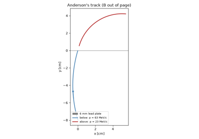
Anderson’s positron: a light, positive track in a cloud chamber

Bhabha and Heitler’s cascade theory of cosmic-ray showers
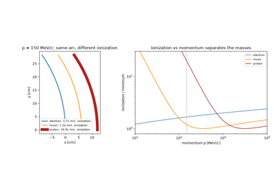
Anderson, Neddermeyer, Street, and Stevenson: discovery of the muon
Electroweak theory#
Renormalized QED annihilation, the Higgs symmetry-breaking mechanism,
their unification into a single electroweak theory, and the neutral
currents that confirmed it, from
physicskit.particle.electroweak.

Tomonaga, Schwinger, Feynman, and Dyson: renormalized QED

Higgs, Brout-Englert, and Guralnik-Hagen-Kibble: symmetry breaking

Glashow, Weinberg, and Salam: electroweak unification
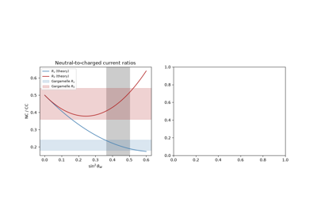
Gargamelle: the discovery of weak neutral currents
Flavor physics#
The CKM quark-mixing matrix and its single, unavoidable CP-violating phase once three quark generations mix.

Kobayashi and Maskawa: the CKM matrix and three quark generations
The neutral kaon system#
From the discovery of the strange particles to CP violation: the
Wigner-Weisskopf two-state mixing model in
physicskit.particle.electroweak.

Cronin and Fitch: CP violation in neutral kaon decay
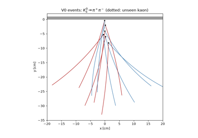
Rochester and Butler: V particles and the first kaons
Relativistic kinematics#
Mass-energy equivalence, Compton scattering, and Mandelstam variables –
the four-vector machinery in physicskit.particle.kinematics and
physicskit.particle.scattering.


Compton scattering: the photon as a relativistic particle

Mandelstam variables and relativistic collision kinematics
Nuclear physics#
Rutherford scattering, Chadwick’s neutron, the Weizsäcker
semi-empirical mass formula, Cockcroft and Walton’s lithium
disintegration, and nuclear fission, from physicskit.particle.scattering and
physicskit.particle.nuclear.

Rutherford scattering and the discovery of the nucleus

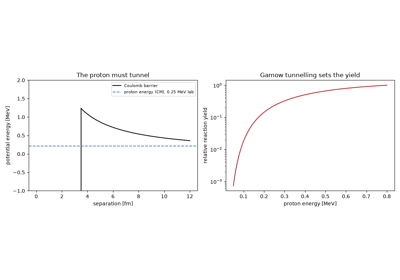
Cockcroft and Walton: splitting lithium with accelerated protons
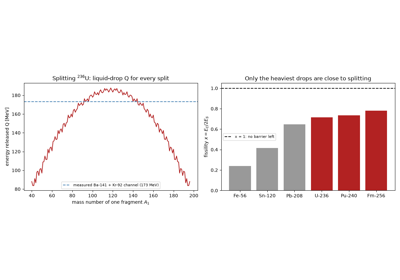
Hahn, Strassmann, Meitner, and Frisch: nuclear fission
Quantum chromodynamics#
Confinement and string breaking, from
physicskit.particle.confinement.

Asymptotic freedom and confinement: a receding quark pair’s string
Radioactivity#
Becquerel’s uranium plates, the exponential decay law, and Bateman’s
closed-form solution for
multi-species radioactive decay chains, from
physicskit.particle.decays.


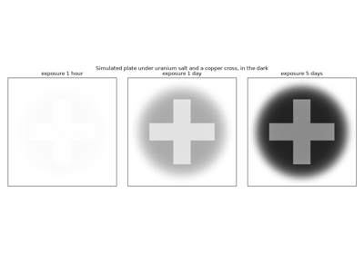
Becquerel’s discovery: uranium rays on a photographic plate
Resonance discovery#
How four resonances were found: the J/psi’s narrow peak, the W’s
transverse-mass edge and the Z’s invariant-mass peak, the top quark’s
three-jet mass, and the Higgs diphoton bump – built on
physicskit.particle.kinematics.invariant_mass().
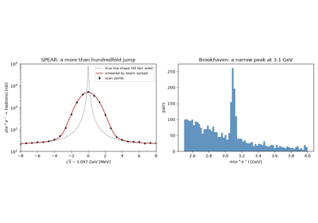
The November Revolution: discovery of the J/psi
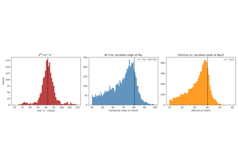
UA1 and UA2: discovery of the W and Z bosons
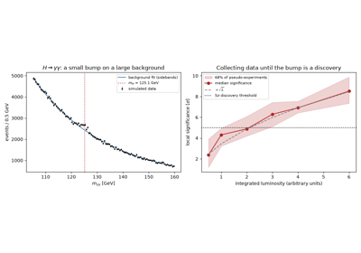
ATLAS and CMS: discovery of the Higgs boson
The weak interaction#
Pauli’s neutrino, Fermi’s beta-decay spectrum, the pion’s two-body
decay, inverse beta decay, parity
violation, and neutrino oscillations, from
physicskit.particle.decays and physicskit.particle.neutrinos.

Lattes, Occhialini, and Powell: the pion’s two-body decay

Cowan and Reines: direct detection of the neutrino

Lee, Yang, and Wu: the discovery of parity violation

Pontecorvo, Maki, Nakagawa, and Sakata: neutrino oscillations
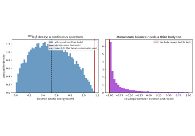
Pauli’s neutrino: the missing energy in beta decay
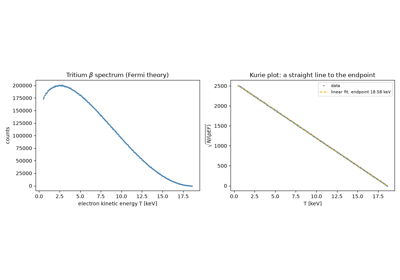
Fermi’s theory of beta decay: spectrum shape, Kurie plot, and Sargent’s rule